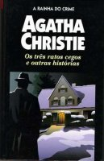

Os Três Ratos Cegos e Outras Histórias
The Three Blind Mice and Other Stories
 Às vezes uma inocente canção infantil pode ocultar um sentido sombrio e macabro. É o caso da cantiga dos “três ratos cegos” de cauda cortada, que serve de sinistro prefixo musical para uma série de assassinatos misteriosamente cometidos numa solitária hospedaria de estrada, isolada pela neve. Os Três Ratos Cegos, irresistível história que abre esta coletânea de contos, deu origem à peça A ratoeira, sucesso de Agatha Christie há várias décadas nos palcos de Londres.
Os Três Ratos Cegos
Série de assassinatos que ocorrem em uma solitária hospedaria de estrada, isolada pela neve.
Estranha Charada
Casal tenta encontrar fortuna deixada por um tio-avô. Como não conseguem, chamam a bondosa velhinha Miss Marple que os ajuda a encontrar o local da herança deixada para eles.
O Crime da Fita Métrica
Mulher é assassinada e as suspeitas caem sob seu marido que irá ganhar um bom dinheiro. Até Miss Marple é envolvida no caso, tendo que desvendá-lo para acabar com todo o mistério.
O Caso da Empregada Perfeita
Depois do desaparecimento de um broche, a empregada é despedida do emprego e pede a Miss Marple que a ajude a encontrar o broche, pois senão ela pode ser acusada de roubo.
O Episódio da Caseira
Depois de uma gripe, Miss Marple está meio chateada e seu médico lhe dá uma pequena historieta de um assassinato e pede a Miss Marple que desvende o segredo. A velhinha resolve o problema como sempre.
Os Detetives do Amor
O Sr. Satterthwaite junto com seu amigo, o coronel Melrose, investigam a morte de Sir James Dwighton, encontrado morto em sua biblioteca.
O Sinal Vermelho
Durante uma sessão espírita, um espírito avisa aos participantes não voltarem para casa pois alguém irá morrer. Após a chegada da polícia, descobre-se que o crime não foi cometido por nenhum espírito.
O Quarto Homem
Um advogado, um padre e um médico ficam na mesma cabine de um trem e discutem sobre uma menina que tinha quatro personalidades. Só então percebem a existência de um outro homem no quarto que conheceu a tal menina. Ele relata uma estória surpreendente sobre a menina, coisas que nenhum dos outros senhores sabia.
O Rádio
Senhora começa a receber mensagens de seu marido morto enquanto ouve a programação da rádio. Na verdade um assassino estava agindo e por pouco não consegue seu objetivo.
Testemunha de Acusação
Tendo sido acusado de assassinato, Leonard Vole procura um advogado que o ajude. Tudo leva a crer que o Sr. Vole realmente matou uma velha senhora para ficar com seu dinheiro. Depois das investigações, o advogado tem uma grande surpresa. Certamente o melhor caso do livro.
O Mistério do Vaso Azul
Sempre que vai jogar golfe, Jack Hartington ouve uma voz pedindo ajuda. Segundo a voz estaria acontecendo um assassinato. Encontra uma jovem que diz sonhar com a mesma coisa e pede ajuda a Jack. Com sua bondade, Jack a ajuda e acaba em maus lençois.
A Última Sessão
Na última sessão de uma médium, ela tem que receber o espírito de uma menina, para sua mãe ficar mais tranqüila. Mas algo estranho acontece e a médium sofre graves conseqüências.
SOS
Tendo que se refugiar em uma casa, Mortimer Cleveland acaba descobrindo uma trama que irá resultar em um assassinato. Apenas ele poderá acabar com essa trama e salvar uma pobre vítima.